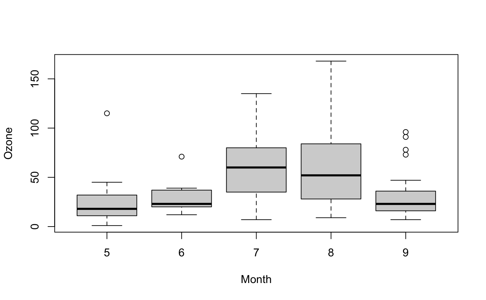

VanWaerdenTest.RdPerforms a van der Waerden normal scores test.
VanWaerdenTest(x, ...) # S3 method for default VanWaerdenTest(x, g, ...) # S3 method for formula VanWaerdenTest(formula, data, subset, na.action, ...)
| x | a numeric vector of data values, or a list of numeric data vectors. Non-numeric elements of a list will be coerced, with a warning. |
|---|---|
| g | a vector or factor object giving the group for the
corresponding elements of |
| formula | a formula of the form |
| data | an optional matrix or data frame (or similar: see
|
| subset | an optional vector specifying a subset of observations to be used. |
| na.action | a function which indicates what should happen when
the data contain |
| ... | further arguments to be passed to or from methods. |
VanWaerdenTest performs a van der Waerden test of the
null that the location parameters of the distribution of x
are the same in each group (sample). The alternative is that they
differ in at least one.
The van der Waerden rank scores are defined as the ranks of data, i.e., \(R[i], i = 1, 2, ..., n\), divided by \(1 + n\) transformed to a normal score by applying the inverse of the normal distribution function, i.e., \(\Phi^(-1)(R[i]/(1 + n))\). The ranks of data are obtained by ordering the observations from all groups (the same way as kruskal.test does it).
If x is a list, its elements are taken as the samples to be
compared, and hence have to be numeric data vectors. In this case,
g is ignored, and one can simply use VanWaerdenTest(x)
to perform the test. If the samples are not yet contained in a
list, use VanWaerdenTest(list(x, ...)).
Otherwise, x must be a numeric data vector, and g must
be a vector or factor object of the same length as x giving
the group for the corresponding elements of x.
A list with class "htest" containing the following components:
the van der Waerden statistic.
the degrees of freedom of the approximate chi-squared distribution of the test statistic.
the p-value of the test.
the character string "van-der-Waerden normal scores test".
a character string giving the names of the data.
Conover, W. J., Iman, R. L. (1979). On multiple-comparisons procedures, Tech. Rep. LA-7677-MS, Los Alamos Scientific Laboratory.
Conover, W. J. (1999). Practical Nonparameteric Statistics (Third Edition ed.). Wiley. pp. 396406.
normal_test in package
coin where the test is implemented in a more general context (but has a quite unpractical interface).
## Hollander & Wolfe (1973), 116. ## Mucociliary efficiency from the rate of removal of dust in normal ## subjects, subjects with obstructive airway disease, and subjects ## with asbestosis. x <- c(2.9, 3.0, 2.5, 2.6, 3.2) # normal subjects y <- c(3.8, 2.7, 4.0, 2.4) # with obstructive airway disease z <- c(2.8, 3.4, 3.7, 2.2, 2.0) # with asbestosis VanWaerdenTest(list(x, y, z))#> #> Van-der-Waerden normal scores test #> #> data: list(x, y, z) #> Van-der-Waerden chi-squared = 1, df = 2, p-value = 0.5 #>## Equivalently, x <- c(x, y, z) g <- factor(rep(1:3, c(5, 4, 5)), labels = c("Normal subjects", "Subjects with obstructive airway disease", "Subjects with asbestosis")) VanWaerdenTest(x, g)#> #> Van-der-Waerden normal scores test #> #> data: x and g #> Van-der-Waerden chi-squared = 1, df = 2, p-value = 0.5 #>VanWaerdenTest(Ozone ~ Month, data = airquality)#> #> Van-der-Waerden normal scores test #> #> data: Ozone by Month #> Van-der-Waerden chi-squared = 28, df = 4, p-value = 0.00001 #>